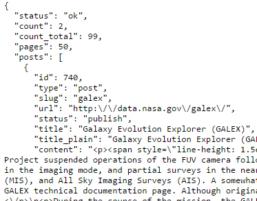

Philip Lewallen's How to guide to data.nasa.gov
What is in the data.nasa.gov JSON object continued
List of the different data names and what they represent
I will use a small screentshot of the code returned by the method to refer to when discussing the different data fields in the JSON.

- status: This field denotes if the api method called returned successfully. It should always have the vlaue "ok".
- count: Returns the number of datasets which have been queried by the methods.
- count_total: Shows the total number of datasets available for querying. You cannot return a count of JSON objects larger than this value.
- pages: This variable is a little strange. It changes based on how many results the chosen method returns. To put it another way, if your "count_total" is 98 and you ask for 2 results, you will have 48 pages of results.
- posts: The posts are a nested JSON object. Inside the nested post object is information about the web posting where the data resides. This post is referring to the overall site which houses the data for each scientific program. Not just a single piece of data. This is important to understand because once a change in the data has been identified one must navigate to the page identified in the query and update their own data from the repository.
- id: This id is the vlaue of this individual post. There are a number of different id's through the overall JSON object. Howver because this id is nested inside of the post object, it shows this is the id for the overall post, or webpage.
- type: Shows the type of the post. I have never seen a result which isn't a "post".
- slug: The slug is version fo the "title" field which has had it's capital characters removed and spaces filled with"-".
- url: Just like your own url except this one goes to NASA's data sites. This particular url takes you to the page listing of the Galex satellite program. Also known as the Galaxy Evolution Explorer.
- status: I have only seen the value of this field set to "publish". This cannot be used a search field in the method, "get_search_results".
- title: Simply the title of this particular research project.
- title_plain This is always the same as the title field previously discussed. Frankly I am unsure as to what the purpose of this field is.
- content: This is a synopsis of the overal program.
- excerpt: A short explanation of the project.